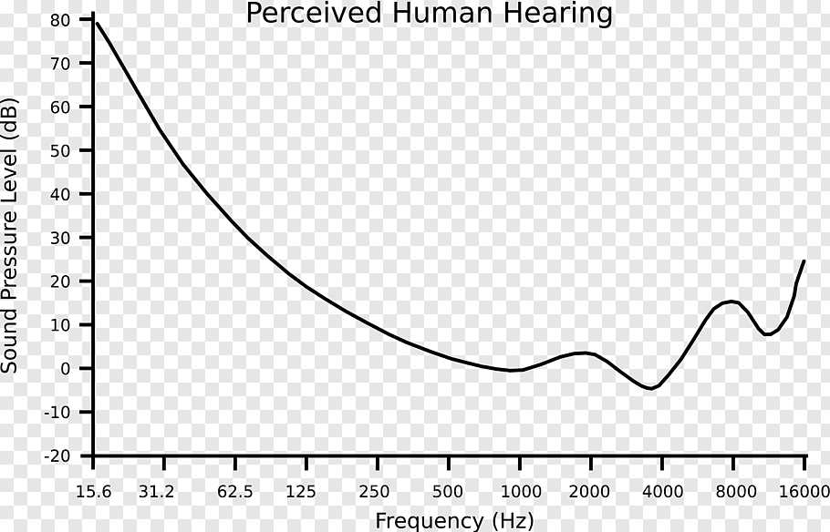

TTT4250 - Lecture 5: Hearing
sara.martin@ntnu.no
Outline
The auditory system: how does our ear work?Classical Audiometry: the "gold standard" technique to measure hearingNEWT Audiometry: developed by SINTEF and NTNUHearing protectors: Lab task
The auditory system The ear: very efficient TRANSDUCER changing SOUND PRESSURE in the air into a NEURAL-ELECTRICAL
signal translated by the brain as speech, music, noise, etc.
The ear transmits, among others, 3 basic physical properties of sound waves:
frequency,
time duration,
and level of the sound.
Those are the fundamental properties defining a sound wave and from which one is able to reconstruct that sound.
The auditory system
The ear has 3 different PARTS:
The external ear :
the pinna, which helps capture sound in the environment
The external ear canal, which channels the sound to the eardrum (typanic membrane) separting external and middle ear
The middle ear : is COMPOSED by 3 bones: Malleus, Incus and Stapes (the smallest measuring 3x2.5 mm)
The inner ear :
auditory tube or EUSTACHIAN tube (underlying the sense of balance and equilibrium)
the cochlea (underlying the sense of hearing): is quite a COMPLEXE structure which you will see in the following video and it contains very important sensory receptors, the HAIR CELLS. There are 2 different types:
TheINNER hair cells which are TRANSLATING sound VIBRATION into NEURAL DISCHARGES. The BENDING of the hairs of the inner hair cells caused by these vibrations INDUCES a neural-electrical POTENTIAL that ACTIVATES a neural
response
in auditory nerve that CONNECT the hair cells to the brainstem.
The OUTER hair cells serve a different PURPOSE. When their hairs are BENDED, the SIZE of the outer hair cells changes and the RAPID change in size (specially in LENGTH) amplifies the LOW-LEVEL SOUND that enters the
cochlea.
The auditory system The tonotopical organization of the cochlea
So, as the video mentioned, the cochlea discriminates the frequency in an excellent manner: different regions of the basilar membrane are excited by different frequencies.
The high frequencies cause a movement in the BASE of the cochlear
Lower frequencies work at the APEX
We can think of it as a PIANO actually having low keys towards left and HIGHER keys towards the right.
The auditory system Hearing threshold
Frequency range: 20 - 20.000 Hz Dynamic range: up to 120 dB (discomfort)

Now that we have discussed the functioning of our auditory system, let's see how do we actually experience sound.
Units : The thresholds are expressed in terms of decibels of SPL, where zero (0) dB SPL means that the sound pressure level is 20 micropascals (i.e., the referent sound pressure (pref) is 20 micropascals).
2- OBSERVATIONS:
What it is interesting to OBSERVE is that our EAR RESPONDS differently for EACH FREQUENCY, which means that the we need actually DIFFERENT SPLs to BE ABLE to hear DIFFERENT freq.
Different levels for different freq. : more energy needed at low frequencies for us to hear them Finally, we can SEE that the MAXIMUM SENSITIVITY region for human hearing is around 3-4 kHz .
REASON is because our EAR CANAL has a RESONANCE around this region and so, it NATURALLY HELPS to HEAR the frequencies between 3-4 kHz.
dB HL : Hearing level (so someone with 40 dB of Hearing LOSS at 500 Hz, the THRESHOLD for detecting 500Hz would be 50 dB SPL)
Freq. range TESTED : 250-8000 Hz which corresponds to the SPECTRUM of SPEECH sound
This figure is an AVERAGE curve for "NORMAL HEARING" population.
The auditory system Equal Loudness Curves
Another plot which is very commonly used is what we call the Equal Loudness Curves. you may have probably hear about those.
On the ABCISSES we have Frequencies
on the y-axis, we have the SPL relative to the reference pressure 20 micropascals (dB SPL)
These curves PRETEND to show all sounds with different frequencies that are PERCEIVED EQUALLY LOUD as a sound of x dB SPL at 1000 Hz.
1000 Hz at 50 dB , to PERCEIVE the SAME LOUDNESS at a frequency 250 Hz , we would need to play the 250 Hz tone at 60 dB instead of 50 dB.
The 1000 Hz is chosen as the REFERENCE FREQUENCY ,
and the UNIT of LOUDNESS for PURE TONES is called PHON and corresponds PERCEPTUALLY to the LEVEL played at 1 kHz.
So, in the case of the 60 dB at 250Hz to be perceived as loud as the 50 dB at 1000 Hz, we would say that:
"the sound at 60 db SPL at 250Hz has a LOUDNESS of 50 PHONS" .
- LOW freq.: We can also OBSERVE that
the ear is LESS SENSITIVE to LOW FREQUENCIES (so we need more SPL to hear low freq.),
and this DISCRIMINATION AGAINS LOWS becomes STEEPER for SOFTER sounds.
Ex:
to perceive 90 phons at 250 hz, we would need to play 250 Hz at a SPL of 93 dB (just 3 dB HIGHER than 90 SPL at 1Khz)
to perceive 60 phons at 250 hz, we would need to play 250 Hz at a SPL 66 dB (6 dB HIGHER)
to perceive 20 phons at 250 hz, we would need to play 250 Hz at a SPL 36 dB (16 dB HIGHER)
Sound discrimination : Over 500 - 4000 Hz and 35 - 80 dB SPL (where humnas are MOST SENSITIVE), listeners are able to DISCRIMINATE:
About 1 dB in sound level (50 db and 51 dB)
and about a half of a percent change in tonal frequency (2000 Hz and 2010 Hz).
Before GOING to the next section, just note that in this plot, we can also see the HEARING THRESHOLD we have seen on the slide before which corresponds to this lower cruve CORRESPONDING to 0 PHONS .
Classical Pure-Tone Audiometry
Classical Pure-Tone Audiometry A bit of history
The field of psychophysics -study the relation between stimuli and perception - was pioneered by Gustav Fechner in the 1860s:
the method of limits the method of adjustment the method of constant stimuli
Fechner’s Method of Limits to hearing .
Psychophysics: the branch of psychology that deals with the relations between physical stimuli and mental phenomena.
Fechner (Germany) introduced various methods for quantitatively measuring the relationship between stimuli and perception:
the method of limits: the stimulus is presented in either ASCENDING or DESCENDING order to determine the smallest amount detectable.
This sequence of descending and ascending runs is REPEATED 3 or more times.
Threshold is defined as the MIDPOINT between the average of descending runs and the average of ascending runs. the method of adjustment: the OBSERVER continuously ADJUSTS the stimulus until they can or cannot perceive it.
Successive trials are AVERAGED to define the threshold response.
and the method of constant stimuli: it presents, in a RANDOM order, the stimuli known to be close to the threshold. The threshold is the stimulus value that was detected 50% of the time.
These methods were not suggested for HEARING but rather for any other kind of PHYSICAL STIMULI (Vision, weight perception, etc), so in a way, they were GENERAL methods.
Classical Pure-Tone Audiometry Bunch (1920s) vs. Hughson-Westlake (1944)
short tone-bursts + silence 5-dB steps threshold level by the ascending run seemed more stable.
The Hughson-Westlake method known as the “ascending method.”
During the 1930s, clinicians were following Bunch's technique and were observing different effects:
better to present SHORT tone-bursts against a background of silence rather than LONG continuous tones with only short breaks of silence as the level was changed (specially for HIGH FREQ:)
when using 5-dB steps, there was little difference between the threshold levels revealed by descending versus ascending runs.
the threshold level defined by the ascending run seemed more STABLE.
In 1944 a paper of major historical significance by Walter Hughson and Harold Westlake was published taking into account the experiences and observations from the clinicians.
ORIGINAL technique with the SUBSEQUENT Hughson-Westlake technique.
In Bunch’s method, the test tone was on almost continuously, being interrupted only when the intensity level was changed.
By contrast, in the Hughson-Westlake method, short tone bursts are separated by longer periods of silence as the intensity level is changed.
Note also that Bunch approached threshold from both directions while Hughson-Westlake relies heavily only on an ascending series.
Classical Pure-Tone Audiometry Carhart and Jerger's publication (1950)
Stimulus: Pure-tone 1s.
then INCREASE from below this point until a response first appears
REDUCE strength of the stimulus until no response ,
Repeat ascendent + descent 3 or more times
Threshold: lowest level detected for at least 2 times
During the 1950s, Carhart and Jerger PUBLISHED the details of the Hughson-Westlake method that WERE NOT ELABORATED in the original article:
discussed the psychoacoustic foundations of clinical threshold testing ,
compared ascending and descending protocols,
discussed the 5-dB step size that is now in nearly universal use,
and established a sound scientific basis for pure-tone threshold testing
Classical Audiometry Audiogram: Thresholds of Hearing
The audiogram is the result of doing an audiometry.
Test both ears separately
Freq. Range: 250-8000 Hz (spectrum of speech sounds)
Frequencies at octave frequency intervals
Pure tone signals of duration 500 ms (4-6s of silence)
Note that the y-label is on the opposite direction as one would expect or is used to (it goes from NEGATIVE to POSITIVE dB).
Psychometric function
Gauss error function :
$$erf (x) = \frac{1}{\sqrt(\pi)}\int_{-x}^{x} e^{-t^2}d t$$
Interpretation : for a random variable Y that is $N(0, \sigma)$, $erf(\frac{x}{\sigma\sqrt{2}})$ is the PROBABILITY that Y falls in the range [−x, x].
The interpretation of the Error Funtion is that for a random variable Y that is NORMALLY distributed with MEAN 0 and VARIANCE 1/2, erf x is the PROBABILITY that Y falls in the range [−x, x].
STOCHASTIC PROCESS and thus, some RANGE of levels around the TRUE hearing TRESHOLD of that person is related to some probability of the person giving a
positive or negative answer. This is why we use a so called Psychometric function to illustrate and model that stochastic effect.
Classical Audiometry Simulation of Pure-Tone Audiometry
Here is a Matlab Simulation for an audiometry. Starting at a level where the tested person can not hear (usually, the audiologist will start by playing a clearly audible level so that the person gets a sense of which sound is she/he
expected to hear to, and then get that level low so that it might the hearing treshold potentially from a non-audible level), in this simulation the next level will be + 4dB higher when the level has not been heard, and -2 dB lower when the
levels has been heard.
NEWT method
Stimulus : 2 pure-tone repetitions
each of duration of 150 ms
with raised cosine fade in and out of 10 ms each
time gaps between them of 150 ms
Strengths of the stimulus:
determined from a physchometric function
presented randomly
Threshold : Maximum Likelihood estimation using the physchometric function
The NEWT is an automated method (the audiometry is a manual method) which was developed by SINTEF and NTNU in 2014. It is also a pure-tone presentation but it will use 2 instances of it of duration 150 ms, with raised cosine fade in and out
of 10 ms each, and with a 150 ms time gaps in between.
NEWT method (drawn in class on blackboard)
NEWT method NEWT vs. PTA
Less stringent background noise vs. quiet background noise
Automated method vs. Manual method
Utilize a software interface to administer the test, thereby controlling for tester variability vs. no method to test variability
Fast (daily) vs. time-consuming
Hearing protectors: lab 3
Measure the Hearing threshold with pure-tone audiometry
Measure the Hearing threshold with NEWT
Measure the Hearing threshold with NEWT with hearing protector
Classical over-the-ear hearing protector
foam earplug